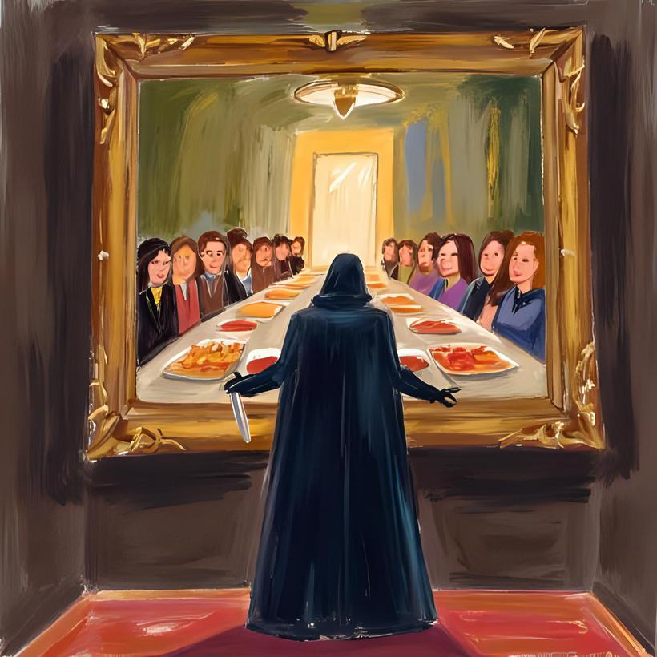
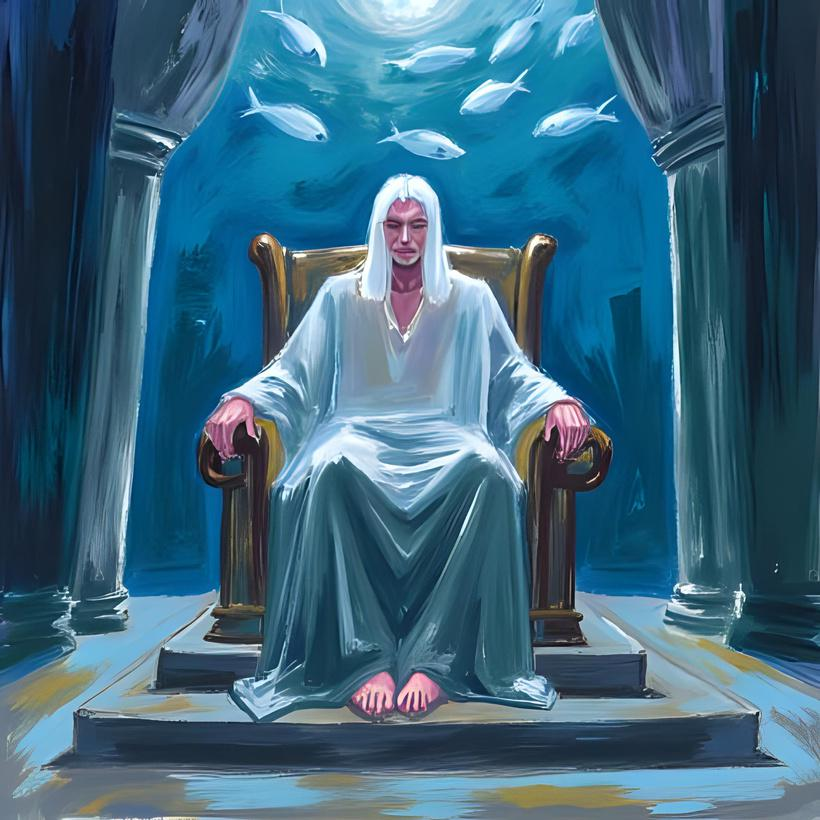
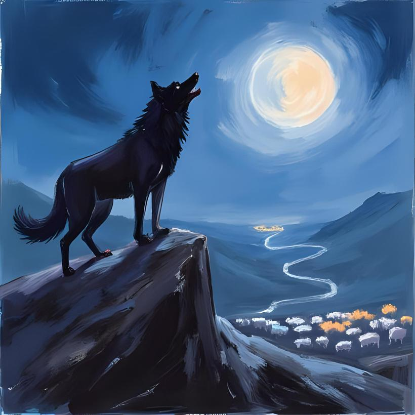
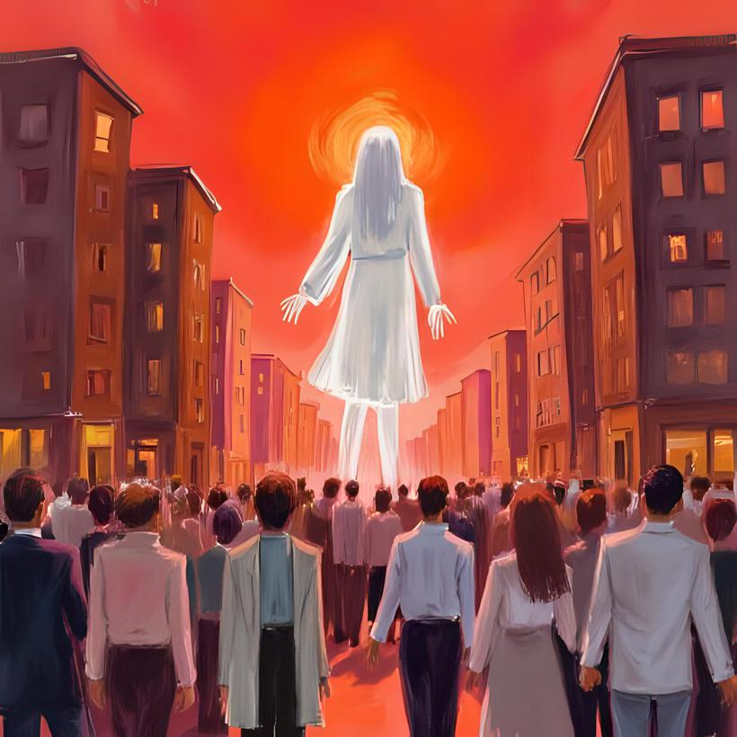
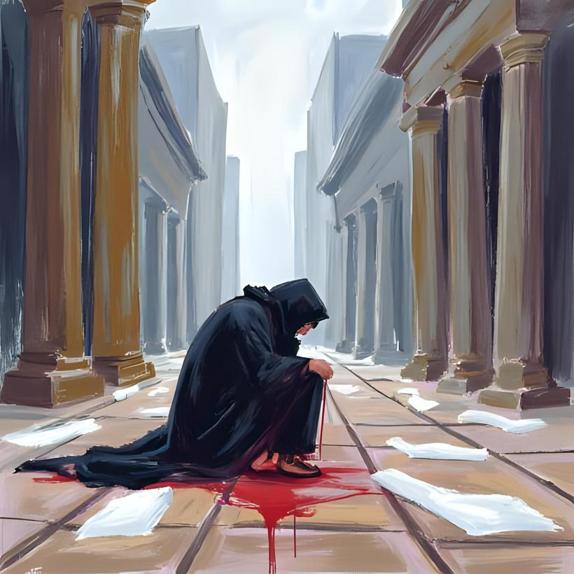
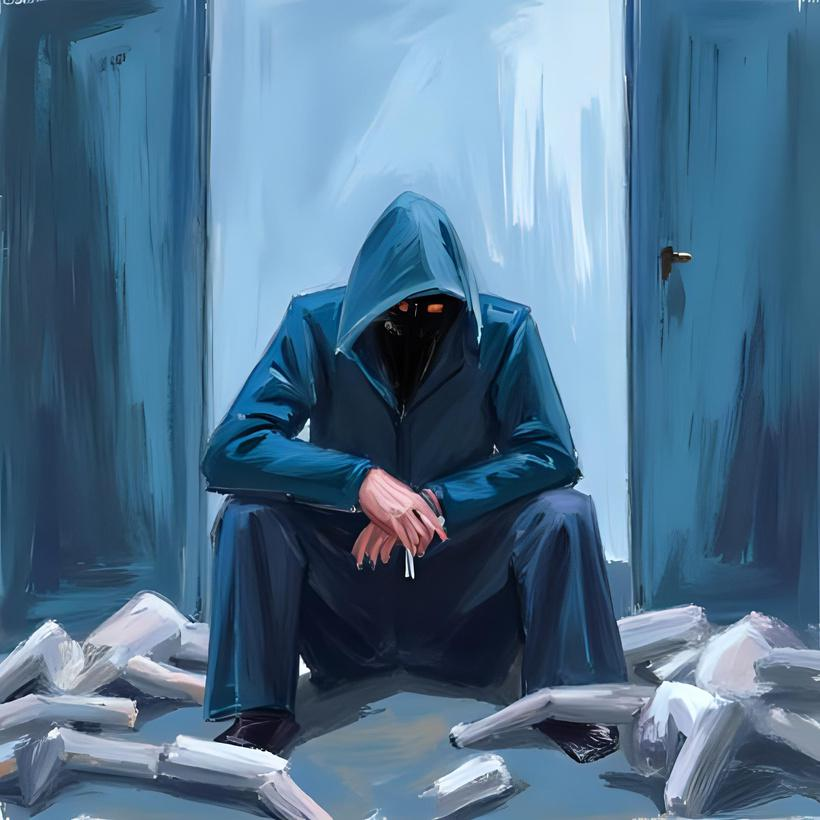
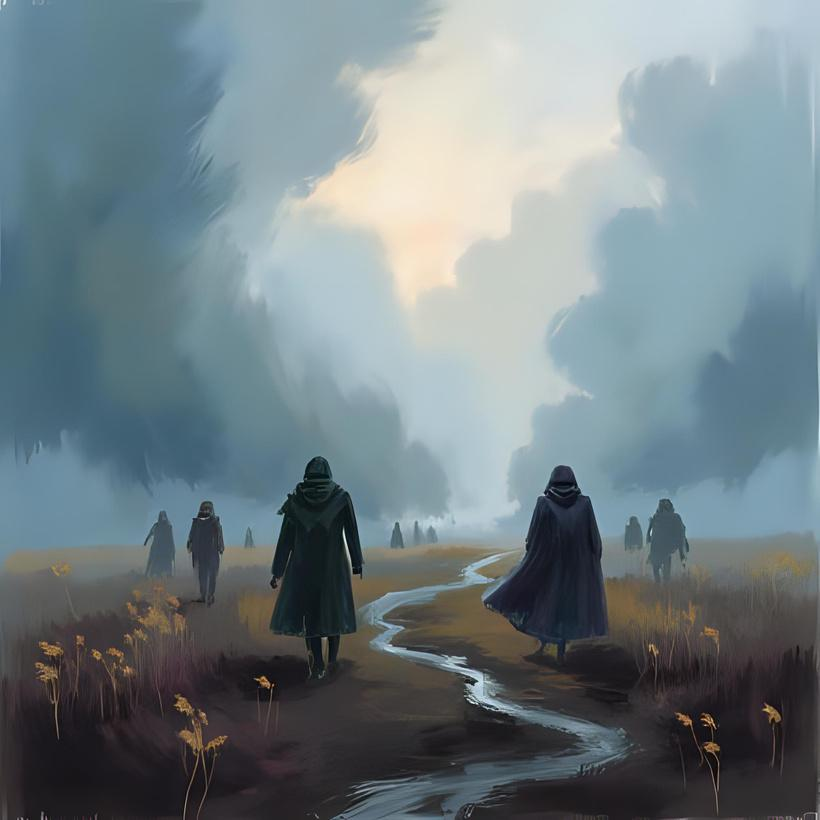

Pengantar
Di dunia bernama Seika, para penghuninya menyembah Hypnus, Raja Kenikmatan. la adalah dewa yang menganugerahkan mimpi indah dan kebahagiaan semu, sebuah pelarian dari kerasnya kenyataan. Namun, tidak semua tunduk padanya.
Sekelompok orang yang menamai diri mereka "Para Penjaga" menolak anugerah Hypnus. Berjubah kelam, mereka percaya bahwa keterjagaan sejati hanya bisa diraih dengan menghadapi penderitaan. Mereka adalah anomali, para pencari luka di dunia yang mabuk oleh tawa.

Bab 1: Kunci
Fajar di kota Keis tidak membawa kehangatan, melainkan perintah. Sinar mentari yang keperakan memaksa para penghuni Seika untuk melepaskan selimut mimpi yang ditenun oleh Hypnus. Bagi kebanyakan orang, ini adalah momen enggan untuk kembali ke dunia nyata. Namun bagi Para Penjaga, ini adalah panggilan tugas.
Kael, seorang Penjaga senior dengan tatapan mata yang letih, mengencangkan jubahnya. Di sampingnya, Lyra, seorang inisiat baru, memandang keramaian pagi dengan gugup. Warga kota mulai membuka jendela, wajah mereka masih menyiratkan sisa-sisa kenikmatan malam. Beberapa dari mereka melambai dengan senyum kosong ke arah Para Penjaga.
"Lihat mereka, Kael," bisik Lyra. "Mereka menyambut kita."
"Mereka tidak menyambut kita, Lyra," jawab Kael tanpa menoleh. "Mereka menyambut simbol. Bagi mereka, kita adalah pengingat aneh bahwa malam telah berakhir. Sekarang lari, dan jangan pedulikan lambaian tangan mereka. Tugas kita bukan mencari persetujuan."
Mereka berlari menyusuri jalanan batu yang dingin. Di pusat kota, sebuah patung raksasa menjulang, sosok dewa kuno yang terlupakan. Dari permukaan patung itu, butiran debu halus berwarna kelabu berjatuhan tanpa henti. Kael menyebutnya "debu kepahitan yang jujur." Debu itu, jika terhirup, akan merusak ilusi kebahagiaan Hypnus, membawa kesedihan dan kejernihan yang menyakitkan.
Para penari kuil yang melayani Hypnus bergerak anggun di sekitar patung, menghindari debu itu seolah wabah. Mereka menganggapnya racun, sementara bagi Para Penjaga, debu itu adalah penawar.
Saat langit mulai menggelap, Kael dan Lyra tiba di sebuah lorong tersembunyi. Di dindingnya, tergantung lukisan-lukisan kecil dengan pemandangan yang indah dan naif-padang rumput yang cerah, anak-anak tertawa. Ini adalah "dimensi palsu" yang mereka gunakan.
"Apa yang kita lakukan sekarang?" tanya Lyra.
"Kita bakar debu itu," kata Kael. la mengambil sebuah lukisan dan mendekatkannya ke tumpukan debu yang telah mereka kumpulkan. Anehnya, saat lukisan itu mendekat, debu-debu itu tersedot ke arahnya dan lenyap dalam kilatan cahaya kecil. "Kita hancurkan kepahitan yang jujur dengan kesempurnaan yang palsu. Itulah ironi tugas kita. Kita menjaga keseimbangan yang tak seorang pun pahami."
Lyra terdiam, mencoba mencerna. "Jadi... siapa yang benar? Hypnus atau kita?"
Kael menatapnya, matanya memantulkan kegelapan lorong. "Itulah pertanyaan yang membuat kita tetap terjaga, Lyra. Itulah kuncinya."
Bab 2: Terbuka
Di sudut lain kota, dua Penjaga, sepasang kekasih bernama Rion dan Elara, menjalankan ritual yang berbeda. Mereka tidak membakar debu dengan lukisan, melainkan menyerapnya ke dalam diri. Bagi mereka, cinta bukanlah kenikmatan, melainkan wadah untuk berbagi penderitaan. Di tengah alun-alun yang dipenuhi debu kepahitan, mereka berdiri berhadapan.
"Kau lihat keegoisan di mataku, Rion?" tanya Elara, suaranya serak. "Rasa ingin bebas dari tugas ini, ingin lari ke dalam pelukan Hypnus."
"Aku melihatnya," jawab Rion dengan tenang. "Dan aku akan membunuhnya untukmu." Dengan gerakan cepat, ia menarik belati kecil dan menggores telapak tangannya sendiri, lalu menempelkannya pada telapak tangan Elara. Rasa sakit yang tajam menyentak mereka berdua. Mereka saling membunuh keegoisan, sebuah tindakan brutal yang mereka sebut romantisme sejati. Aliran darah mereka seakan menjadi saksi bisu.
Tiba-tiba, Rion berbalik dan menghampiri sebuah lukisan besar yang terpajang di dekat mereka -lukisan perjamuan meriah. Tanpa ragu, ia menancapkan pisaunya tepat di tengah kanvas. Terdengar suara robekan yang memekakkan, mematahkan jiwa palsu di dalamnya.
Sebuah suara menggema di udara, lembut namun penuh kuasa. Suara Hypnus. "Sungguh berani," bisik suara itu, terdengar geli. "Panggung ini hanya untuk dirimu semata, Penjaga. Kau kira penderitaanmu adalah sebuah pencapaian?"
Gembok-gembok imajiner yang mengunci jiwa para penghuni dari penderitaan mulai bergetar. Salah satunya pecah. Seorang warga tiba-tiba berhenti tertawa, matanya melebar dalam kengerian saat secuil kenyataan merasuki pikirannya. la mulai menjerit. Pembunuhan jiwa telah dimulai, bukan oleh Para Penjaga, melainkan oleh retakan kecil dalam ilusi Hypnus.
Dari singgasananya yang tak terlihat, Hypnus menari. Darah segar imajiner membasahi pipinya. Baginya, ini adalah tontonan terindah. "Ya... rasakanlah!" serunya dalam ekstasi. "Inilah kebenaran yang sesungguhnya! Kenikmatan yang memberkati kalian semua, baik dalam tawa maupun dalam tangis!"
Bab 3: Penerangan
Meskipun dipuja sebagai Raja Kenikmatan dan cinta, Hypnus sendiri tidak memiliki pasangan. la adalah entitas yang tunggal. Baginya, cinta adalah sumber ketidakstabilan, sebuah kelemahan yang dapat merusak anugerah absolut yang ia miliki.
Di istana bawah airnya, di alam mimpi yang paling dalam, makhluk-makhluk berbentuk ikan dengan sisik bercahaya menari untuknya. Mereka adalah jiwa-jiwa yang paling taat, para penghangat lautan sunyinya. Mereka membuka mulut, bukan untuk bernapas, tetapi sebagai wujud permohonan tanpa suara, memintanya untuk berbagi rasa, untuk merasakan cinta yang ia sebarkan.
Hypnus memandang mereka dari singgasana karangnya. Ini bukan pertama kalinya ia melihat permohonan itu. "Wahai para penghangat lautan," suaranya bergema lembut di air. "Aku menghargai harapan kalian semua. Tapi, diriku tidaklah sempurna seperti yang kalian kira. Aku adalah pemberi kenikmatan, bukan pemiliknya. Aku tak mampu memenuhi keinginan kalian!"
Tiba-tiba, sesosok bayangan besar melintas di atas mereka. Sosok anggun namun mengerikan yang dikenal sebagai Bidadari Kebiadaban. la mengulurkan tangannya dan mengelus kepala para ikan itu. Seketika, tarian indah mereka berubah menjadi gerakan panik. Mereka berlarian ketakutan, menyembunyikan kebenaran yang baru saja mereka sadari: raja mereka kosong. Sang Bidadari tersenyum tipis. la tahu, kekecewaan ini akan membusuk. Suatu saat nanti, gejolak dendam dari para penyembah yang patah hati ini akan bangkit dan merubah peradaban Seika selamanya.
Bab 4: Terlalu Terang dalam Kegelapan, Terlalu Gelap dalam Terang
Jauh di pegunungan tandus Seika, seekor serigala berjalan sendirian. Malam adalah temannya, memberinya kewaspadaan yang tajam. Namun, kewaspadaan itu juga membawa kesepian. Dari kejauhan, ia sering mengamati kawanan domba di lembah. Mereka berkumpul, saling berbagi kehangatan, melukis pemandangan kebersamaan yang manis namun rapuh. la iri.
Dalam frustrasinya, ia melolong ke arah bulan. Raungannya bukan amarah, melainkan teriakan ketakutan dan kesepian yang dibalut keberanian. "Kebiasaanmu itu membuatku muak!" teriaknya dalam hati pada para domba. "Kebahagiaan dangkal kalian! Aku ingin menghancurkan panggung mewah yang kalian bangun dari kepolosan itu!"
la berlari menuruni gunung, bukan untuk memangsa, tetapi didorong oleh keinginan putus asa untuk menunjukkan kasih sayang dengan caranya sendiri-kasih sayang yang protektif dan keras. Tapi para domba hanya melihat taringnya dan lari tunggang langgang. Mereka tidak mampu menjaga diri, dan mereka juga menolak perlindungannya.
Kemurungan adalah satu-satunya mantelnya. Keunggulannya sebagai predator yang waspada tidak pernah dilihat sebagai anugerah, melainkan marabahaya.
Di alamnya, Hypnus tidak menari. la terduduk diam di singgasananya, seperti batu permata yang dingin. Serigala itu bisa merasakannya. Ada ikatan aneh di antara mereka-dua makhluk agung yang sama-sama kesepian.
Hypnus memutuskan untuk memberikan hadiah pada serigala itu. [cite_start]Bukan kenikmatan, tetapi tingkat keterjagaan yang absolut. [cite: 75] [cite_start]la mengirimkan gelombang energi dingin yang membekukan sisa kehangatan dan ketulusan di dalam hati serigala itu, menyisakan hanya insting dan kewaspadaan murni.
Di pegunungan, mata serigala itu berkilat lebih tajam dari sebelumnya. Sebuah bisikan merasuki benaknya, janji dari Hypnus. "Akan ku tunjukkan padamu... bagaimana panggung mewah yang membangunkan kebiasaan itu bisa runtuh."
Bab 5: Gebrakan
Sesuatu yang mengerikan terjadi. Matahari terbit dengan warna merah darah, cahayanya menelanjangi semua kepolosan. Di jalanan, orang-orang yang tadinya mengenakan pakaian warna-warni kini serempak memakai jaket putih bersih. Mereka membalikkan peradaban. Gerbang kota Seika terkunci rapat dari dalam. Langit dipenuhi kebingungan.
Romantisme yang kemarin hanya berupa ritual kecil, kini meledak menjadi wabah. Kesurupan massal terjadi di mana-mana. Orang-orang saling berpelukan dengan erat, begitu erat hingga tulang rusuk mereka patah. Mereka tertawa sambil menangis, sebuah cinta baru yang membawakan kematian.
Hypnus, merasakan kekacauan ini, muncul di hadapan mereka semua dalam wujud spektral. "Apa yang kalian lakukan?!" suaranya bergetar, bukan karena kuasa, tetapi karena cemas. "Aku menjadi sesak! Aku tidak nyaman dengan kondisi seperti ini!"
Seorang pria berjubah putih menoleh padanya, wajahnya bersimbah air mata dan darah orang lain. "Oh, Hypnus yang kami cintai," katanya dengan tenang. "Kami sendiri ingin bertanya seperti engkau, tapi sejujurnya, kami tidak terlalu peduli lagi."
Sebuah kekuatan baru sedang menggedor peradaban Seika dari dalam. Kekuatan yang lahir dari kekecewaan para penyembah dan kesepian sang serigala. Gedoran itu semakin kuat, berteriak layaknya prajurit genosida.
Hypnus mundur selangkah. la melihat penolakan di mata mereka. Mereka bukan lagi domba-domba penurutnya. Mereka telah menjadi manusia unggul yang berani menolak kenikmatannya.
la kembali ke singgasananya, raut wajahnya berubah dari cemas menjadi pasrah, bahkan sedikit kagum. "Nikmatilah gebrakan peradaban ini," bisiknya pada dunia. "Mereka adalah anak-anakku yang telah dewasa. Kalian semua, tidak akan ku paksakan lagi."
Bab 6: Menari
Singgasana Hypnus terasa begitu sepi. Di hadapannya, dunia Seika terbakar dalam api ciptaannya sendiri. la memandang cipratan darah yang mewarnai jubah-jubah putih dengan tatapan seorang seniman. Segelas anggur merah menemaninya. Ini adalah tontonan paling nyata yang pernah ada.
Di bawah, Para Penjaga kehilangan arah. Kael, Lyra, Rion, Elara-mereka semua terduduk diam, mata mereka terpaku pada kenyataan brutal di hadapan mereka. Penderitaan yang mereka cari kini datang dalam bentuk banjir bandang yang tak bisa dibendung.
"Apa yang kurasakan ini?" Kael bergumam pada dirinya sendiri, tubuhnya gemetar. "Kemampuan terjagaku... menipis. Aku tenggelam dalam kekacauan ini, bukan menghadapinya." la merasa ngeri saat sebuah pikiran melintas: "Aku harus mencari penderitaan yang lebih besar, yang lebih personal!"
Di tengah kekacauan, orang-orang berjubah putih itu tiba-tiba berhenti. Mereka menengadah ke langit yang memerah, melakukan sembahan spontan. Mereka berdoa, menunggu rintikan hujan untuk membersihkan mereka, menyelamatkan mereka dari kesengsaraan yang mereka ciptakan sendiri.
Bab 7: Letih
Gebrakan itu tidak berlangsung selamanya. Semakin lama terjadi, semakin menyurut pula cipratan darah. Energi anarkis itu mulai lelah. Para Penjaga mendapati diri mereka berada di tengah pemandangan yang aneh: keheningan di antara tumpukan mayat.
Kael merasa lebih kalah dari sebelumnya. "Aku dilanda gempa kebingungan!" bisiknya. "Ditebas oleh sesuatu yang tak terlihat ini terasa lebih rendah daripada dikalahkan oleh para pemuja Hypnus."
Sabotase batiniah mulai merayap. Keterikatan mereka pada 'tugas' dan 'penderitaan' mulai terasa hampa. Satu per satu, Para Penjaga merasakan jiwa mereka terjun ke jurang kehampaan.
Duduk termenung di antara bangkai-bangkai kepalsuan, Kael mengeluarkan pisaunya. [cite_start]Bukan untuk bertarung, tapi untuk mengukir sesuatu di lengannya. "Lebih baik sementara waktu ini, aku mengabadikan momen goresan pisau runcing ini. Hanya ini rasa sakit yang bisa ku kendalikan."
Jauh di singgasananya, Hypnus tidak lagi menonton. la melempar sisa anggur merah di gelasnya ke arah dunia Seika. Cairan itu jatuh bukan sebagai anggur, melainkan sebagai gelombang kenikmatan jenis baru-kenikmatan yang sunyi, tenang, dan melankolis. Seketika, gemuruh air yang menenangkan terdengar di seluruh Seika. Para Penjaga yang letih, termasuk Kael, tanpa sadar memejamkan mata. Tubuh mereka rileks untuk pertama kalinya setelah sekian lama, menikmati alunan suara yang membuai itu. Mereka tertidur.
Bab 8: Ambiguitas Krisis
Para Penjaga terbangun. Bukan karena fajar, tetapi karena kenikmatan aneh yang dilemparkan Hypnus telah meresap dan memudar. Mata mereka berputar, mencoba menemukan fokus di dunia yang terasa asing. Lingkaran kebingungan menjerat pikiran mereka.
Dengan sisa-sisa tekad mereka, mereka mencoba kembali ke tugas. Mereka membuka mulut lebar-lebar secara metaforis, siap untuk melahap berbagai penderitaan dan kesengsaraan yang tersisa di kota. Namun, saat mereka melakukannya, tanda tanya bermunculan.
"Aku melihat keterbalikan," pikir Lyra sambil menatap seorang penyintas yang duduk diam sambil tersenyum. "Penderitaan tidak lagi membuatnya terjaga, justru membuatnya damai."
Hypnus, merasakan kebingungan mereka, melontarkan kembali gelombang kenikmatan langka itu, kali ini lebih kuat. Gelombang itu tidak membuat mereka tertidur, tapi mempertajam ambiguitas. Lalu, terdengar satu suara: tepukan tangan Hypnus, menggema di benak setiap Penjaga. Tepukan itu bukan pujian, melainkan perintah yang kejam. Perintah untuk menghadapi penderitaan dan kesengsaraan yang nyata, bukan yang mereka cari, tetapi yang kini ada di hadapan mereka-kehampaan makna.
Para Penjaga itu pecah. Mereka tidak lagi berlari sebagai satu kesatuan. Masing-masing lari ke tempat yang paling sunyi, ke sudut-sudut kota yang hancur, ke dalam diri mereka sendiri. Mereka butuh ruang untuk mempertanyakan segalanya. Siapa mereka? Apa yang sebenarnya mereka hadapi? Apakah perlawanan mereka selama ini hanya bagian lain dari tarian agung Hypnus?
Tidak ada jawaban. Hanya krisis yang ambigu, menggantung di udara Seika yang kini sunyi, selamanya.